냉장고 구조대
지금 남은 재료를 눌러보세요
소담이 하는 일
먹은 걸 적기만 하는 앱이 아니에요.
적은 걸 가지고 오늘 저녁까지 해결하는 앱이에요.
스크롤하면 기능이 흘러갑니다
냉장고에 남은 재료를 고르면 만들 수 있는 메뉴가 떠요. 부족한 것만 1인분으로 담기고요.
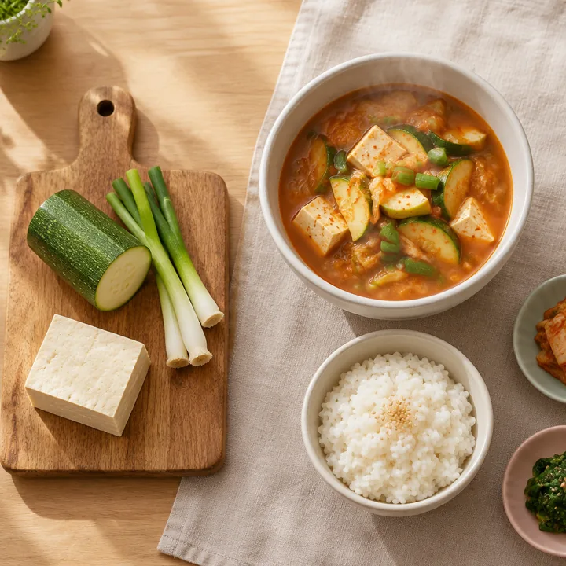
집밥·배달·외식·편의점·건너뜀 중 한 번 탭. 하루 15초, 칼로리는 묻지 않아요.
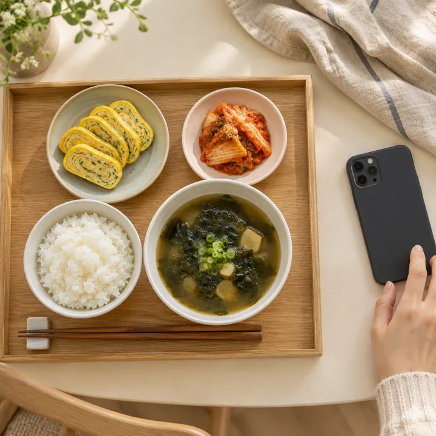
내 끼니의 생김새와 못 쓰고 버린 재료를 보여줘요. 남이 아니라 과거의 나와만 비교해요.
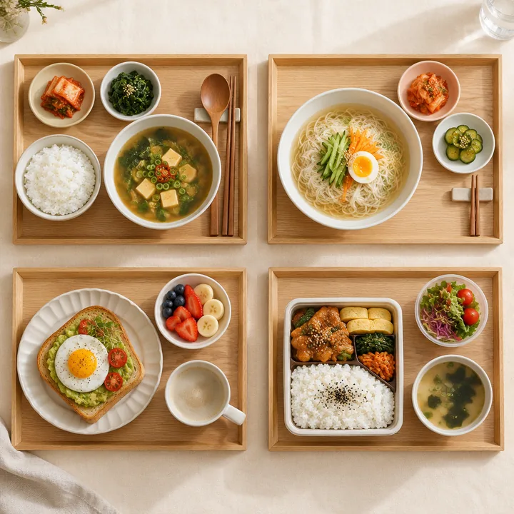
편의점으로 때운 날에도 혼내지 않아요. 다음 끼니만 가볍게 제안해요.
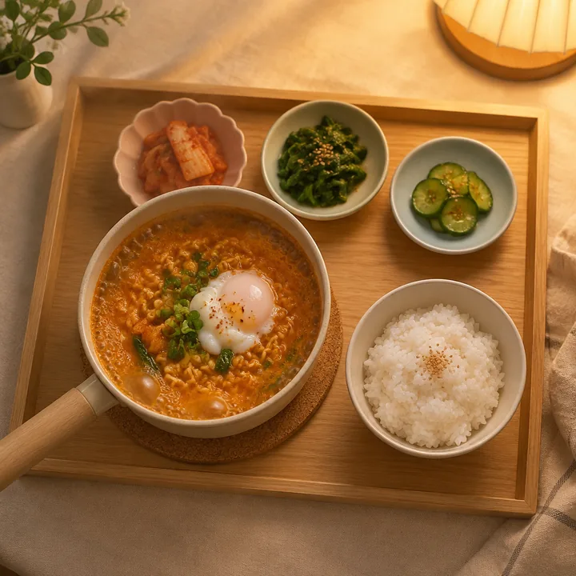
"대파 반 단 남았는데 뭐 해먹죠?" 같은 방에 사는 사람들이 답해줘요.
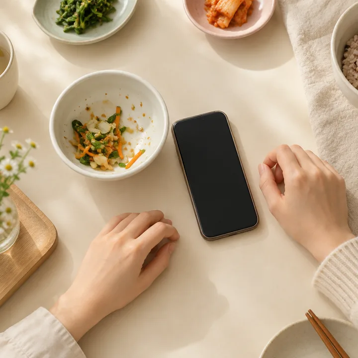
대파 한 단이 아니라 ⅓단. 남지 않는 분량으로 손질해서 보내드려요.
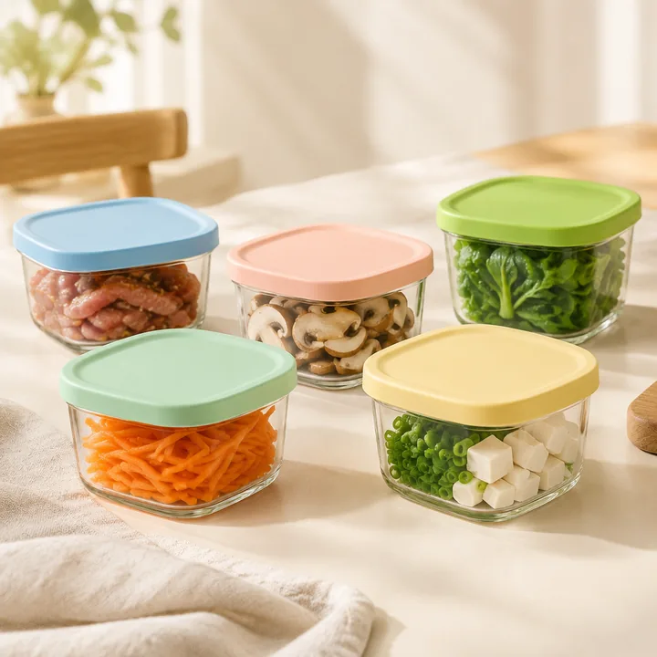
핵심 기능
세 기능은 목록이 아니라 하나의 순환이에요. 연결 고리는 "놓친 재료"입니다.
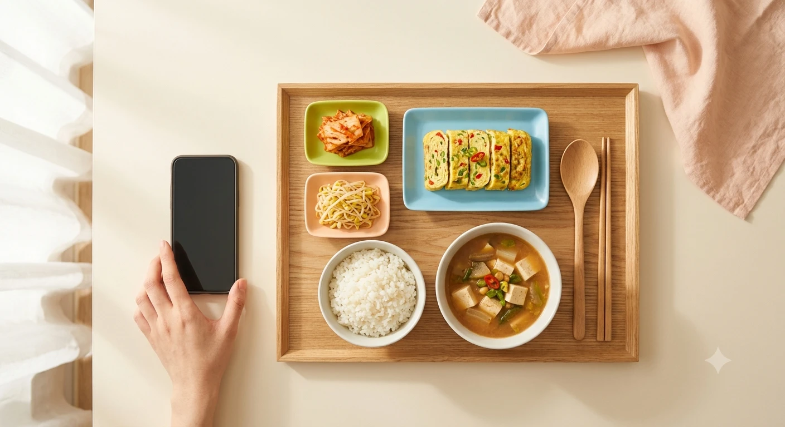
먹은 것을 아이콘 한 번으로. 하루 총 15초, 칼로리 입력은 요구하지 않아요.
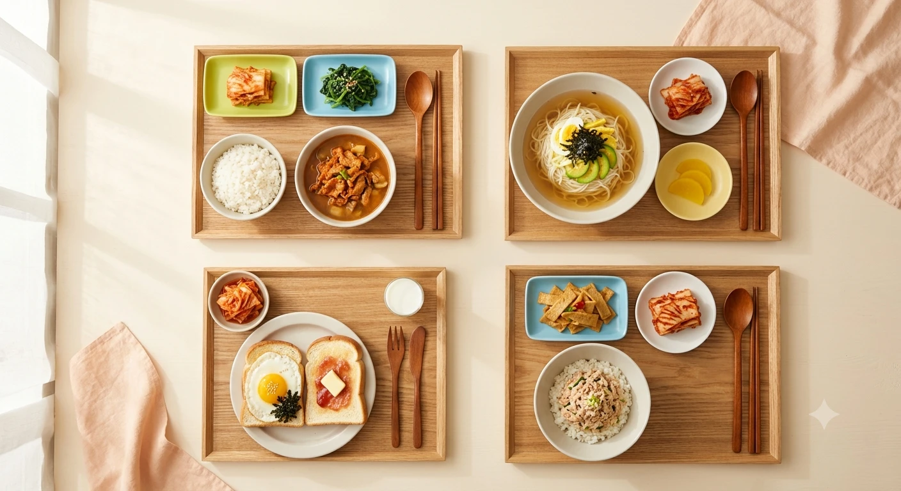
판단하지 않고 보여주기만 해요. 남과 비교하지 않고, 과거의 나와만 비교해요.
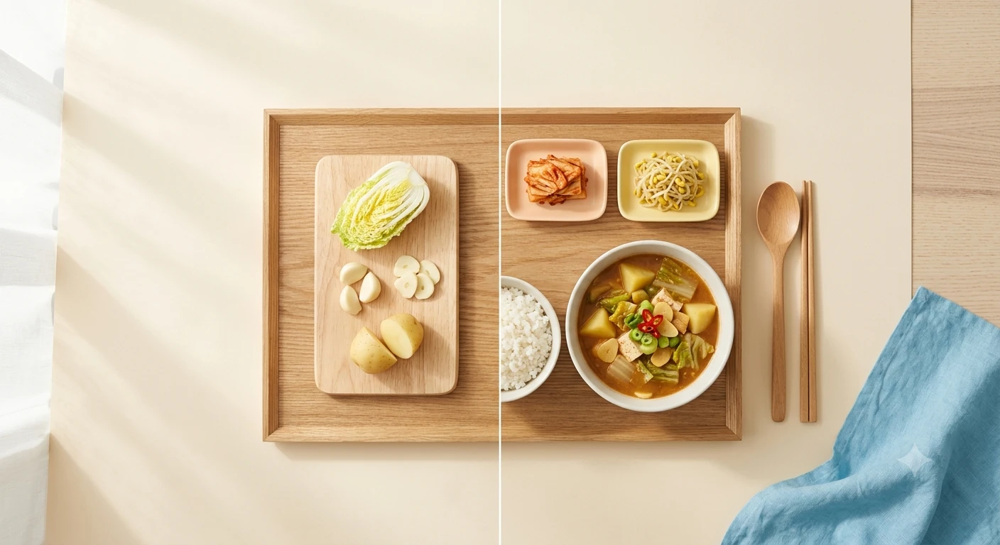
남은 재료로 다음 끼니를 해결해요. 부족한 것만 담기고, 다음엔 덜 사게 돼요.
왜 소담인가
새벽 2시에 라면을 먹어도 아무도 보지 않고, 끼니를 거르면 아무도 묻지 않아요. 무너지는 건 의지가 약해서가 아니라 말려주는 사람이 없어서예요.
1인가구 824만 4천 가구 · 전체 가구의 36.6%로 역대 최대
재료를 사면 1인분이 안 나와서 반이 남고, 냉장고에서 썩고, "사면 버리네" 하고 다시 배달을 시켜요.
평가하지 않고, 남은 재료로 다음 끼니를 같이 정해요.
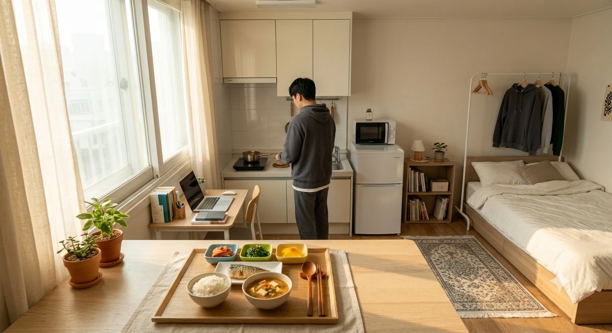
출처: 국가데이터처 「2025년 인구주택총조사」(2026년 7월 발표)
사용 방법
앱을 켜고 끝낼 때까지, 하루에 15초면 충분해요.
집밥·배달·외식·편의점·건너뜀 중에 하나. 사진을 찍어도 되고, 안 찍어도 돼요.
주말마다 한 장. 이번 달 끼니가 어떻게 생겼는지, 어떤 재료를 못 쓰고 버렸는지 보여줘요.
냉장고에 있는 걸 고르면 만들 수 있는 메뉴가 떠요. 부족한 재료만 1인분 분량으로 담기고요.
만져보기
아래는 데모용 화면이에요. 표시되는 수치는 모두 가상 데이터입니다.
지금 남은 재료를 눌러보세요
눌러서 하루를 담아보세요
체중도, 칼로리도 재지 않아요. 해낸 것만 세요.
편의점으로 때운 날에도 괜찮아요
버튼을 눌러보세요.
소담은 '망했다'고 말하지 않아요. 실제로 망한 것이 없기 때문에요.
지난 4주 동안 못 쓰고 버린 재료
그래서 다음 장보기에는 애호박을 반 개만 담아요.
플랜
기본 끼니 관리를 돈 받고 잠그지 않아요. 구독으로 파는 건 얼마나 깊이 봐주는가입니다.
지금의 나
무료
가장 많이 선택
되어가는 나
월 5,900원가격 예시
되고 싶은 나
월 9,900원가격 예시
식재료는 별도 결제예요. 구독자에게는 할인이 적용돼요.
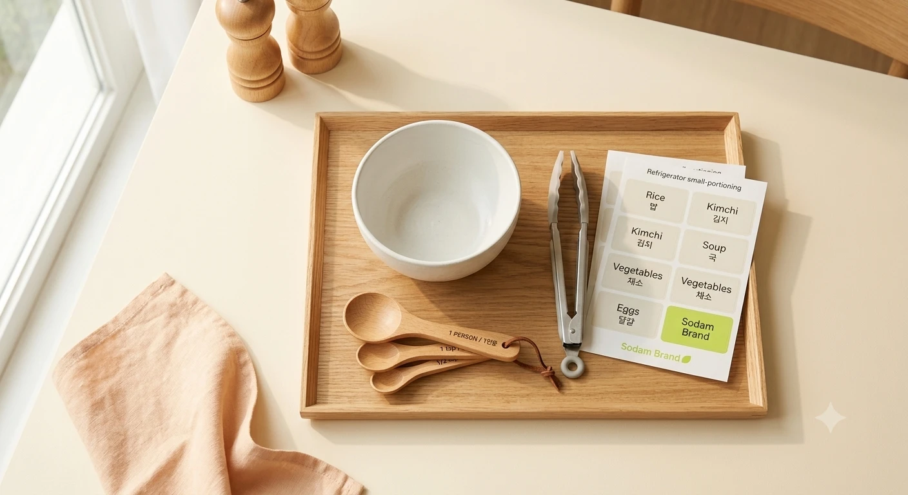
자취장인 웰컴 키트
1인분 계량 스푼, 냉장고 소분 라벨 스티커, 재료 집게, 소담 그릇 하나. 대파 한 단이 아니라 ⅓단이 어느 정도인지 눈에 익으면, 버리는 재료가 줄어요.
후기
사진에 마우스를 올리면 후기가 보여요. 가상 서비스의 예시 후기입니다.